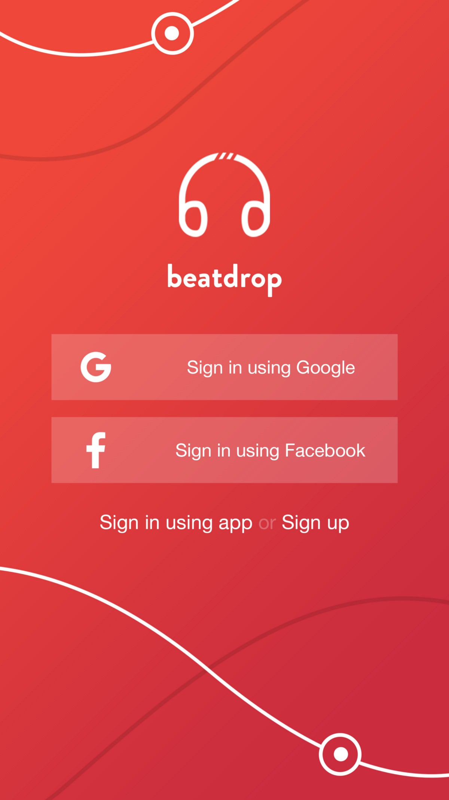
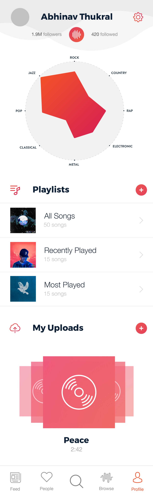
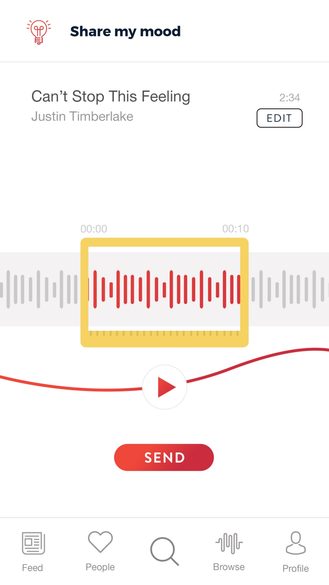
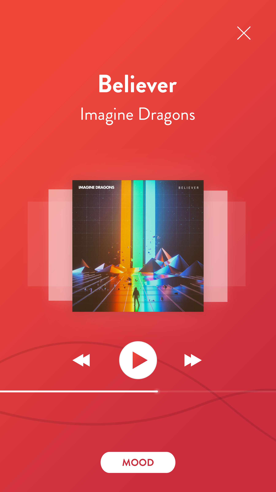
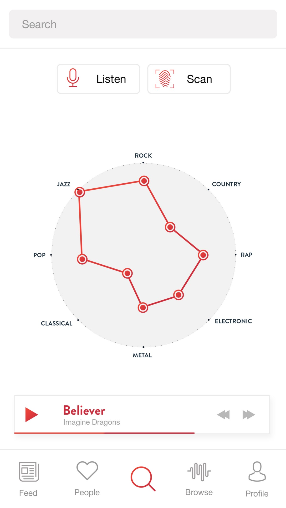
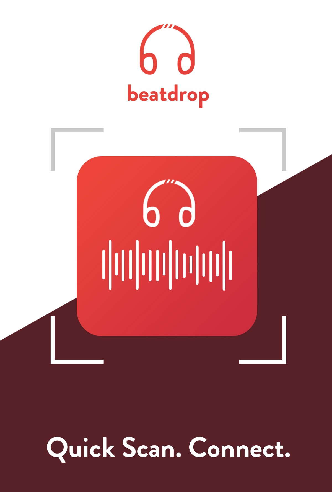

BEATDROP
An application where users can find people with similar music interestsRole I was responsible for conducting User Experience Research overnight which guided all the features and converted individual screens into a interactive prototype.
Team Pranshu Bansal, Varnit Jain, Sarthak Marwaha, Shikhar Sehdev, Abhinav Thukral Timeline 16 hours (18:00, 24 March 2017 - 10:00, 25 March 2017)
RESEARCH
Survey
We had an hour to conduct a survey, that would help us validate our ideas and know more about our audience. We spread across a google form and managed to received 62 responses from students in the age group of 15-21.
1. Feasibility
We observed that 32% of the people spend 10 hours a week and the average person spends about an hour a day listening to music. On a scale from 1 to 5, the average person rated 3.34 as the likelihood of them using a social search app for music. Based on this, since there are no apps in the market that currently meet this unique demand of music browsing and social search simultaneously, we decide that this is a feasible venture to work on.
2. Sign In
97% of the people surveyed prefer to use Facebook or Google over creating accounts to sign into mobile apps. Easier access to signing in through Facebook or Google would provide a better experience.
3. Listening Habits
71% of the people surveyed like to analyze their own and other people's musical interests. 75% said "No" to listening to any one fixed genre of music. Clearly, a person's musical interests comprise of different levels of affinity for multiple genres. The challenge was to represent these interests in a way that would be like a fingerprint, helping users to compare their interests with others. The solution we thought of was our feature — Pulse graphs, radial graphs split into different genres of music.
4. Sharing Mood
84% people would be open to listening to lesser known artists. And 63% said that they would like to share their mood with their friends with a song. In the music player section, we added a button to share a 10 second clip of the song they're listening to as "Mood". The browse tab allowed users to listen to new, trending artists, works of music, that would not generally show up in their feed.
The elements of design for a platform that people come back to use. The Hooked model of behavior design by Nir Eyal consists of 4 key points:
Action: Accomplishing something with the app is a limited number of taps away- Fresh In-App Content by way of New and Trending songs
- Quality UI/UX
- Monitoring dominant actions and simplification thereon
- Never ending Feed
- Addictive one-touch scrolling through Mood statuses of friends
- Rewarding personalized Pulse graph
- The rush of matching people with the same interests
- Playlists
- Moods
- Uploads
- Search people by specific musical interests
- Search people by scannable Waveform ID
FEATURES
After completing our research and evaluating the pros and cons, we developed a prototype based on the following features. Each feature is aimed to help a certain pain point of the initial user research.
Social Media Login
Informative Profile
Song Story
Music Player
Graph Search
Scan QR to Connect
